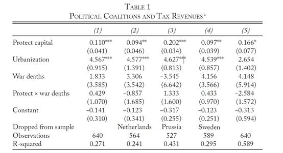

战争一定能缔造现代财税体制么？一个补充性的解释
赵德昊
政文观止Poliview
微信号 zhengwenguanzhi
功能介绍 从一群年轻人的视角出发，专业、专注、专解海内外比较政治经济研究的前沿佳作。
__发表于
文献来源：Ryan Saylor, Nicholas C. Wheeler, “Paying for War and Building States: The Coalitional Politics of Debt Servicing and Tax Institutions”, World Politics, Vol.69, No.2, 2017, p.366-408
作者简介：
Ryan Saylor是美国杜兰大学政治科学教授，主要研究领域是发展政治经济学。其个人网址是：https://ryanrsaylor.wordpress.com/
Nicholas Wheeler是约翰霍普金斯大学欧亚研究院的副教授，其主要研究方向是欧洲国家构建、政治变革、国际政治经济学和全球化政治学。其个人简介参见：https://www.sais- jhu.edu/nwheel12
蒂利曾说过：战争缔造国家，国家发动战争。现代财税体制是现代国家的一个重要支柱，也被认为是在战争中诞生的一个重要现代国家制度。为了在高密度、高成本的战争中生存，统治者们必须在短期内筹措大量的金钱作为战争费用，借贷是当时统治者们短期大量筹款的最重要方式。买不起用白条，那还不起呢？赖账对大多数统治者来说并不是一个好选项，一是因为偿还债务保障了王室的信誉，好借好还，再借不难。二是因为，巨额债务会影响宏观经济，随之而来的往往是通货膨胀，这就容易引发下层群众的反抗。一般认为，弱国家只能收取那些容易获取的收益，比如贡赋、租金、关税等。强国家却可以收取诸如消费税、财产税、个人所得税等需要相当行政能力但也收益巨大的税种。因此强化财税体制是统治者们偿还债务的合理选择。然而根据欧洲现代国家形成时期的历史状况可以发现，战争在一些国家确实推动了现代财税体制的建立，然而在另一些国家，尽管战争不断，但现代的财税体制却迟迟没有形成。作者用政治联盟(political coalition)来补充对这一问题的解释。
作者将政治联盟分为两种，一是净债权者（net creditors），二是净债务者（net debtors）。 净债权者为了能够收回贷款，因此希望国家能够完善财税体制。净债务者则可以在通货膨胀中获得须偿贷款价值缩水的好处，所以对财税体制完善三心二意。在漫长的战争中，处于统治地位的政治联盟如果是净债权者，那么国家将加强财税体制的建设，反之则财税体制不会发生根本性的变化。作者不仅通过对英国、法国和波兰- 立陶宛这三个案例来验证自己的观点，而且还用数据来验证了自己的假设。
英国在1688-1789年之间进行了三场大战：九年战争（1688-1697），西班牙王位继承战争（1701—1714）和七年战争（1754-1763）。这三场大战大大增加了英国的政府开支和长期债务，也推动了英国财税体制的变革。
围绕英国的财税体制变化，许多著名学者都提出了自己的解释。蒂利认为英国在强制密集和资本密集之间的平衡道路造就了土地贵族和商人之间的联盟从而增强了国家能力。诺斯认为，光荣革命后，议会监督的强化让政府不得不履行诺言，偿还债务。作者则从政党政治的角度出发解释这一问题。1694年创办的英格兰银行主要承担了战时向政府借贷的职能，而英格兰银行基本上是由托利党员认购股份形成的。拥有大量流动资本的辉格党人属于净债权人。以土地利益为核心的托利党则反对由英格兰银行和更强的财税体制所带来的信贷紧缩和高税负。因为他们属于信贷市场中的净债务人。1715-1790年执政的辉格党从两个方面完善了财税体制，一是加强了消费税和印花税的汲取，并以此作为财政收入的基础；二是由国家雇员而非地方豪强收取税收，在一定程度上缓解了委托- 代理难题。最终英国的税率由17世纪80年代的4%提高到18世纪90年代的21%。而同时期的法国在税率上并没有什么大的起色。
1688年的法国与同时期的英国拥有类似的财税体制，他们都依赖对于农场的税收，都在收税过程中面临着严重的委托- 代理问题。在法国的信贷市场中，商人占总债权份额的23%和总债务份额的8%，贵族占总债权份额的62%和总债务份额的85%。因此商人属于法国信贷市场中的净债权人，贵族则属于净债务人。贵族主要贷款给王室和其他贵族。通过对王室的贷款，贵族获得了官职或者部分税收的豁免，而且让贵族在法国的政治经济生活中更有话语权。在当时，土地租金要比信贷市场的利益高上好几倍。年轻贵族总要向大地主贵族贷款来并购土地，作为自己的启动资金，而且借款者一般要求贷款者付给年金，只要借款者不想要这笔年金时才会要求贷款者还复本金。因此贵族的借贷即便有偿还风险，对他们的影响也是不太大。更何况，作为借贷市场中的净债务人，宏观经济的动荡实际上对他们有利。所以这些位高权重的贵族们根本无意推动财税体制的完善。因此从1688年至1788年，法国人均纳税仅从2.94克黄金增加到5.47克黄金，而同期英国的人均纳税则从2.07克黄金增加到12.87克黄金。
波兰- 立陶宛也是一个债务人组成统治联盟从而挫败了财税制度建设的例子。波兰在1600年至1721年卷入了包括波俄战争（1605-1618），第二次北方战争（1655-1660）和大北方战争（1700-1721）。波兰- 立陶宛和其他国家一样依赖由地方贵族代为收缴的农业税。为了应对战争带来的巨额花费，波兰- 立陶宛于1657、1659和1673年短暂试验过收取消费税，但都没有巩固下来。埃特曼认为，波兰- 立陶宛在地缘竞争上受到的压力较晚，此时贵族已经巩固了他们的权力，君主无力再进行收入上的集中。唐宁对贵族在国家构建上不负责任不知妥协的行为十分困惑。作者认为，财税体制的落后对这些贵族十分有利，让他们即使葬送国家也不觉得可惜。
波兰- 立陶宛是一个强制密集型的政体，乡村是国家权力的基础。国家的贵族分为三个层次，最富有的大地主、中层地主和小地主。大地主拥有个人的军队，中小地主在其中作为军官服役。战争时期大土地主对国家的借贷以皇家土地的租赁权来偿还。在国家的信贷市场中，商人阶层的缺乏意味着重要的交易事务都发生在地主之间。大地主向其他大地主和中型地主借贷来大量购买那些在经济上有困难的地主的土地。中型地主借贷给大地主以维持自身的地位。以1676年至1686年的情况为例。大地主的债务是其债权的两倍。因此在信贷市场上，大地主属于净债务人，中型地主属于净债权人。正是这些大地主占据着拥有实权的上议院，每次国王选举都会导致对国王更多的限制。落后的财税制度所带来的通货膨胀增加了波兰大地主出口西欧的竞争力，减少了他们所需偿付贷款的实际价值，而且农民的佃赋都是实物所以不受货币影响。在1655至1715年间，波兰- 立陶宛中央政府的收入反而减少了50%。
接下来作者通过数据来验证自己关于政治联盟和早期现代欧洲国家财政汲取之间的关系。根据的蒂利的国家类型划分，纳入分析的样本有一个资本密集型国家（尼德兰），四个资本化强制的国家（英格兰、法国、普鲁士和西班牙），一个强制密集型国家（瑞典）。作者选取这些国家是因为数据较容易获得。
作者数据分析的因变量是国家汲取的能力，由人均纳税量来表示。作者假定财税体制越成熟国家汲取能力越强。自变量是protect capital，指的是商人资本得到保护的程度。商人拥有的政治权力越高说明执政集团越接近于形成了一个债权人联盟。这一变量的取值范围为1-7，1指的是面对统治者对于财产的没收没有任何有效的保护，5指的是债权人在议会中得到了有效的代表，7指的是商人能够对政治施以主要的影响或控制。尽管商人并不能完全和债权人划等号，但是在早期现代欧洲，商人阶层拥有最多的流动资本，通常属于债权人。因变量是国家汲取的能力，由人均纳税量来表示。控制变量包括战争的烈度，用死亡人数来表示（war death）,城市化率(urbanization)。回归结果如下图。其中第一列为全样本的回归结果，第二列排除了一个资本密集型国家尼德兰，第三列删除了普鲁士，因为学者们认为尽管普鲁士的财税体制很传统但他的国家汲取能力依然十分可观，第四列排除了唯一的强制密集型国家瑞典，第五列修正了由于样本选择所带来的潜在影响。通过图表可以发现，作者的假设基本得到了验证。

预览时标签不可点
个
上一篇 下一篇
微信扫一扫
关注该公众号
微信扫一扫
使用小程序
： ， 。 视频 小程序 赞 ，轻点两下取消赞 在看 ，轻点两下取消在看